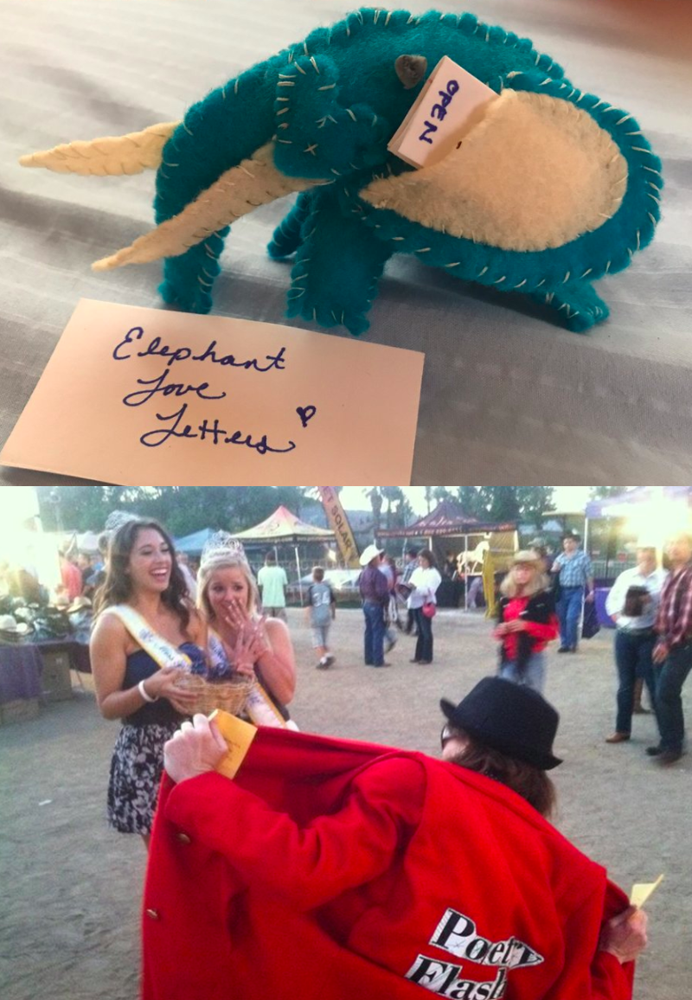
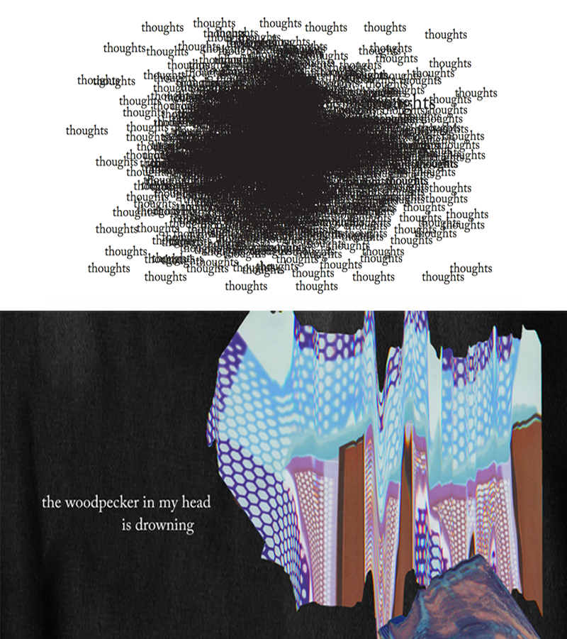

Comparative Research
My project idea revolves around showcasing poetry from people of color, focusing on their voices and visualizing their personal experiences.
Case Study 1: The Living Poetry Project
The Living Poetry Project is a poetry project that aims to make poetry into tangible objects to given away, in an attempt to spread it everywhere and make it part of the everyday experience. Some examples of the project are giving poems to random construction workers, creating felt elephants with pockets to hold poetry notes, or writing poems on shirts and giving it away. However, this project is focused more on creating crafts rather than an interactive web or app experience, which is what my project will be. Similar to The Living Poetry Project, my project is also inspired by making poetry more accessible and interactive for the average person, with an emphasis on telling the stories of people of color and centering the experience on people of color.
Case Study 2: things i thought when my thoughts thought without me
"Things I thought when my thoughts thought without me" is an interactive visual poetry website by Lauren Holden that visualizes her personal poetry through the combination of creative typography, scroll interaction, and ambient background sound. The user interacts with the poetry projects by scrolling down. There is a small white button on the left hand corner of the screen, which upon clicking takes the user to a navigation page with the list of poems, an about section, and resources for mental health. Her project is very well done, although for my project I would like more interactivity other than scrolling. I would also like to increase the accessibility of my website by clearly defining the navigation section.